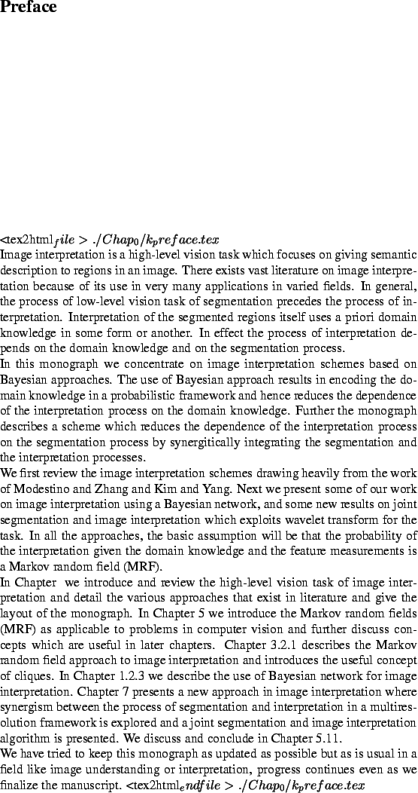

Next: Overview
Up: kmono
Previous: List of Figures
- Image interpretation using integration.
- Knowledge base used for road images.
- Knowledge base used for outdoor building scene.
- Knowledge base used for the indoor computer images.
- Restoration comparison.
- Assumptions imposed on the problem due to the choice of
features.
- Definitions of commonly used features.
- Details of image used for knowledge acquisition.
- Knowledge associated with Figure H.1
- Rules for constructing knowledge pyramid.

2004-02-10